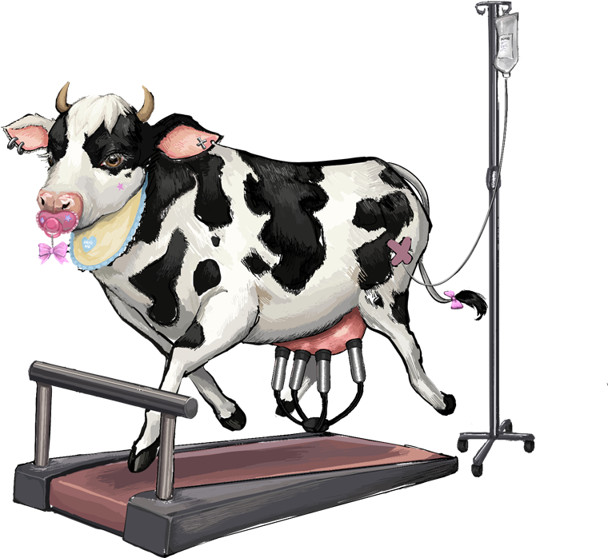
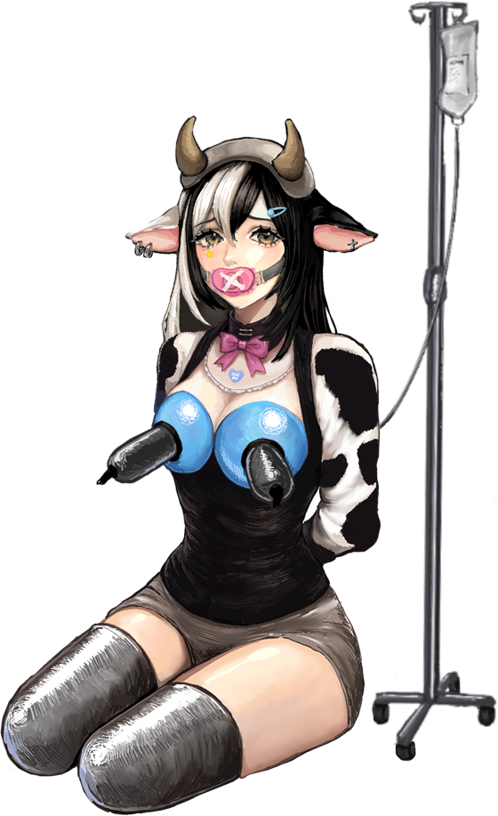

Selected Game
COWorker
An experimental feminist game about productivity, bodily control, and the fact that the player is also trapped inside the system.

Overview
The game is a piece of feminist critique about the demands modern society puts on women: work hard, produce constantly, and look good while doing it.
You watch a cow through a retro monitor and keep three systems moving: nutrition, work progress, and milk output. You click squeeze, push and feed over and over to keep production up, pulling milk and labour out while pushing nutrition in.
When all three bars approach the limit, the cow becomes a woman being managed by exactly the same logic.
The game is not only asking you to watch exploitation. It makes you take part, because your own position depends on continuing it.

The subject on the monitor, and the only thing the player is allowed to act on.
Drawing the body as equipment
I did a lot of the argument in the art rather than in text. The cow is hooked to an IV drip for nutrition, attached to a milking machine, and kept running on a treadmill. The body is staged as production equipment rather than as an animal.
The part that matters most to me is the decoration. The cow carries hyper-feminised and deliberately juvenile styling: bows, pink, soft baby-ish detailing. It references the distorted beauty standard known in China as 白幼瘦, meaning “fair, young, thin.” I projected that standard onto livestock on purpose.
Then the transformation reverses the metaphor. When the woman appears, the cow motifs stay on her body. She is not released from the framing by becoming human. She inherits it.

The player is inside the system
The design decision I care most about is what happens when you stop.
The player is not an observer. Stop clicking and the interface tells you to go to work. Refuse for long enough and the player is fired.
That closes the loop the piece is about. The subject of the critique is not only the figure on the monitor; it is the position the player occupies while operating her. Both are being pushed along, and neither can simply opt out without a penalty. Making that penalty land on the player, not on the character, is what keeps the game from being a poster.
Gameplay
Hosted on YouTube. Nothing loads from YouTube until you press play.